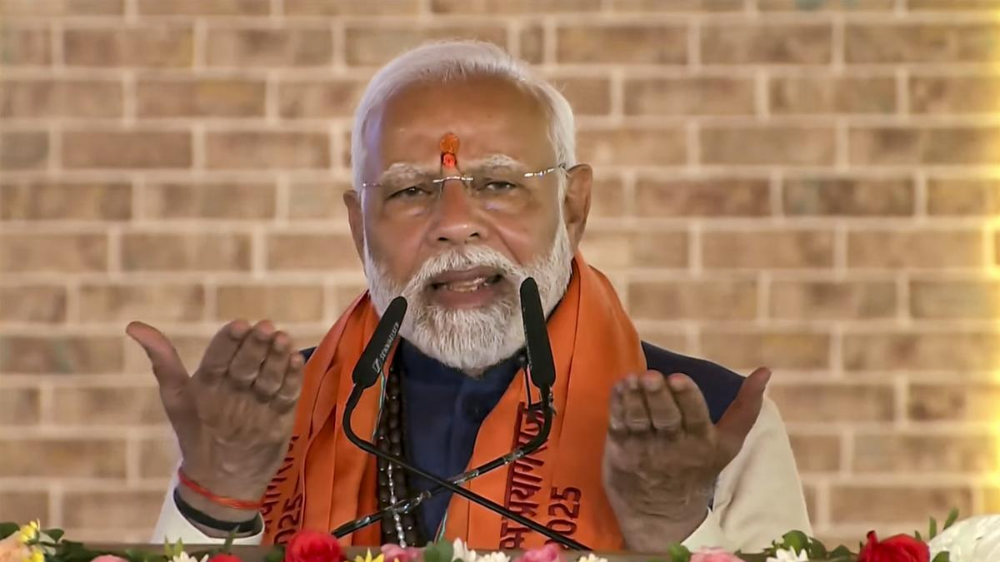

State News
Maha Kumbh 2025 is ‘maha yagya of unity’, says PM Modi in Prayagraj
PM Modi inaugurates ₹5,500 crore worth of projects in Prayagraj, including a multilingual AI-based chatbot to streamline communication for Maha Kumbh devotees; Centre, State working to provide facilities for pilgrims, he says
The organisation of Maha Kumbh 2025 in Prayagraj will take India’s spiritual and cultural identity to new horizons, Prime Minister Narendra Modi said on Friday, describing the event as a ‘Maha Yagya’ of unity. Also Read | Uttar Pradesh declares Maha Kumbh area new district Mr. Modi inaugurated and launched 167 development projects worth about ₹5,500 crore in Prayagraj, ahead of the mega event. He highlighted the event’s role in promoting social cohesion as well as the economic empowerment of communities, noting that differences among castes and sects disappear during the Maha Kumbh. Prime Minister Narendra Modi performs worship at the Sangam Nose, in Prayagraj, December 13, 2024. Prime Minister Narendra Modi performs worship at the Sangam Nose, in Prayagraj, December 13, 2024. | Photo Credit: PTI “If I had to describe the Maha Kumbh in one line, I would say that it’s a ‘Maha Yagya’ of unity which will be discussed around the world. It will be one of the largest gatherings in the world where millions of devotees are welcomed daily, with a new chapter of history being written on the land of Prayagraj,” Mr. Modi said. Railways to run over 1300 trains for Prayagraj’s Mahakumbh Mela from January 13 to February 26 Centre of spiritual experience The city of Prayagraj is not just a geographical entity or location, but a centre of spiritual experience in which the confluence of Yamuna, Ganga and Saraswati rivers plays a pivotal role in uniting people from all walks of life, the Prime Minister said. “Prayag is not just a confluence of three rivers, but above it. It is said that when the sun enters the house of Makar, then all the divine powers, nectar, sages and saints descend down to Prayag. Puranas would be incomplete without Prayag. It is a place where holy sites are at every step,” Mr. Modi said. Prayagraj, the land of Nishadraj, holds an important place in Lord Ram’s journey to becoming Maryada Purushottam, the PM said. “The story of Lord Ram and Kevat inspire us where Kevat washed Ram Ji’s feet and helped him cross the river with his boat, symbolising devotion and friendship. The development of Shringverpur Dham signifies the friendship and the statues of Lord Ram, and Nishadraj will continue to convey the message of brotherhood for generations to come,” he added. U.P. to organise Kumbh Summit ahead of Maha Kumbh 2025 Pivotal role of sanitation workers Mr. Modi hailed the contribution of sanitation workers, noting that they play a pivotal role in conducting such a large event. “More than 15,000 sanitation workers will ensure cleanliness during the 2025 Kumbh,” he said, recalling his personal experience of washing the feet of sanitation workers in 2019, which he described as a memorable moment of his life. He launched the multilingual Sah’AI’yak’ Chatbot, an artificial intelligence-based platform to streamline communication for devotees attending the Maha Kumbh, in 11 Indian languages. The Prime Minister alleged that previous governments had neglected the Kumbh, forcing devotees to suffer difficulties. “It is due to lack of connection with our culture and faith, but rest assured, our government both at the State and Centre has deep respect for India’s traditions and faith,” Mr. Modi said. U.P. announces roadshows in India and abroad to promote Mahakumbh Facilities for pilgrims “Central and State governments consider it a responsibility to provide facilities for pilgrims attending Kumbh. Thousands of crores have been allocated for various projects, with both Centre and State governments working together to ensure smooth preparations. The way different government departments are engaged in the preparations for Maha Kumbh is commendable. Special focus has been given on connectivity here so that there is no problem in reaching Kumbh from any corner of the country or the world,” the PM added. Earlier, the PM visited Saraswati Koop in Prayagraj, saying the place was steeped in history and spirituality. He also offered prayers at the Shri Akshayavat Temple. “Today I got the good fortune of visiting Akshay Vat in the holy place of Prayag. Akshay Vat is a symbol of the immortal consciousness that has been flowing in India for thousands of years in the form of knowledge, science and spirituality. I pray to Lord Veni Madhav that in the Amritkaal, the immortal consciousness of Akshay Vat becomes the source of renewable energy for the creation of Amrit Bharat,” he added. Published - December 13, 2024 03:45 pm IST